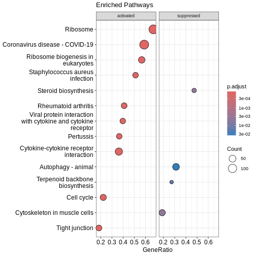
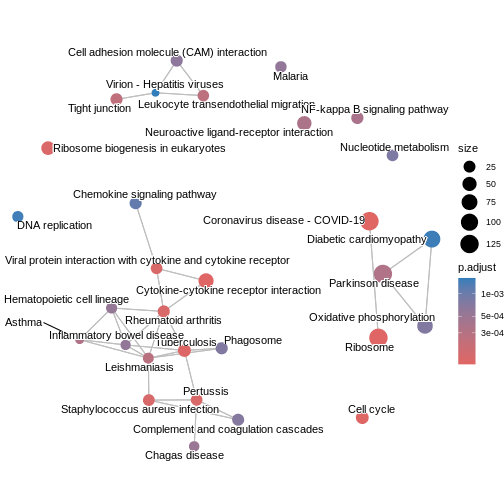
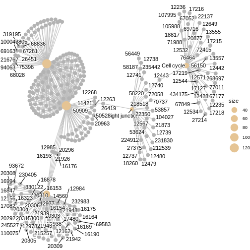

Content from Introduction
Last updated on 2025-11-25 | Edit this page
Overview
Questions
- What are the main types of functional enrichment analysis approaches, and how do they differ?
- When should you choose one enrichment strategy over another for RNA-seq data?
Objectives
- Understand the conceptual differences between over-representation analysis (ORA) and functional class scoring (FCS)
- Learn how enrichment tools (e.g.
clusterProfiler,fgsea,RegEnrichandSTRINGdb) implement these approaches using pathway and gene-set databases
Introduction
Sometimes, there is an extensive list of genes to interpret after differential gene expres-sion analysis, and it is not feasible to go through the biological function of each gene one at a time. A common downstream procedure is functional enrichment analysis (or gene set testing), which aims to determine which pathways or gene networks the differ-entially expressed genes are implicated in. There are many gene set testing methods available, and it is useful to try several of them.
The purpose of this tutorial is to demonstrate how to perform functional enrichment analysis/gene set testing using various tools/packages in R. We will use data from the Nature Cell Biology paper, EGF-mediated induction of Mcl-1 at the switch to lactation is essential for alveolar cell survival (https://www.ncbi.nlm.nih.gov/pubmed/25730472). This study examined the expression profiles of basal and luminal cells in the mammary gland of virgin, pregnant and lactating mice.
Load and read required libraries
We begin by loading the required packages. Please read the following libraries:
R
library(edgeR)
library(goseq)
library(fgsea)
library(EGSEA)
library(clusterProfiler)
library(org.Mm.eg.db)
library(ggplot2)
library(enrichplot)
library(pathview)
library(edgeR)
library(impute)
library(preprocessCore)
library(RegEnrich)
Inspect Datasets
We will use several files for this workshop:
- Results from differential expression analysis
debasalanddeluminalwith genes in rows and logFC/p-values in columns - Sample information file
factordata– gives details of sample ID and groups - Gene lengths file
seqdata - Filtered counts file
filteredcounts– genes in rows and counts for each sample in columns, lowly expressed genes removed - Hallmarks gene set file for mouse from MSigDB loaded in .RData
format –
Mm.H
Let’s inspect the files:
R
debasal <- read.csv("data/limma-voom_basalpregnant-basallactate", header = TRUE, sep = "\t")
deluminal <- read.csv("data/limma-voom_luminalpregnant-luminallactate", header = TRUE, sep = "\t")
factordata <- read.table("data/factordata", header = TRUE, sep = "\t")
#To view the first 5 rows of the dataset
head(debasal)
OUTPUT
ENTREZID SYMBOL GENENAME logFC
1 24117 Wif1 Wnt inhibitory factor 1 1.819943
2 381290 Atp2b4 ATPase, Ca++ transporting, plasma membrane 4 -2.143885
3 226101 Myof myoferlin -2.329744
4 16012 Igfbp6 insulin-like growth factor binding protein 6 -2.896115
5 231830 Micall2 MICAL-like 2 2.253400
6 78896 1500015O10Rik RIKEN cDNA 1500015O10 gene 2.807548
AveExpr t P.Value adj.P.Val B
1 2.975545 19.85403 5.722034e-11 5.366685e-07 15.55490
2 3.944066 -19.07173 9.406224e-11 5.366685e-07 15.09463
3 6.223525 -18.30281 1.562524e-10 5.366685e-07 14.55585
4 1.978449 -18.21558 1.657202e-10 5.366685e-07 14.13954
5 4.760597 18.00994 1.905713e-10 5.366685e-07 14.33472
6 3.036519 18.60321 2.037466e-10 5.366685e-07 14.35640You can also view the entire file in a different tab using
View():
R
View(debasal)
Challenge
How many columns are there in
debasalanddeluminalobjects?What are the different types of samples in this analysis? Hint: Look at
factordatafile.
Summary
Commonly used analyses following differenital gene expression (DGE)
Over-representation analysis (ORA): Tests whether DGE list contains more genes from a specific pathway or gene set
Functional class scoring (FCS): Evaluates coordinated shifts in expression across all gene sets
Protein-protein interactions (PPI): Maps the functional connections between proteins to reveal network structure or pathways involved
Content from Gene Ontology testing with clusterProfiler
Last updated on 2025-11-25 | Edit this page
Overview
Questions
- What are the different types of GO terms (BP, MF, CC)?
- How do we perform ORA using
enrichGO()function? - How can we run GSEA-style functional class scoring with
gseGO()function?
Objectives
- Apply GO-based enrichment methods using
clusterProfiler - Perform both ORA and GSEA using the GO terms database
- Build confidence in navigating GO resources and interpreting enriched terms
Introduction
The Gene Ontology (GO) project is a major bioinformatics initiative
that standardises how we describe gene functions across species,
organising them into three categories: Biological Process, Molecular
Function and Cellular Component. clusterProfiler is an R
package that allows us to test whether these GO terms are associated
with our RNA-seq results and gain insight into the pathways or functions
represented in our data. This section demonstrates how to perform both
over-representation analysis (ORA) and
functional class scoring (FCS) with GO database,
depending on whether you are working with a list of significant genes or
full ranked expression data.
Over-Representation Analysis (ORA)
ORA tests whether a list of significant genes are linked to specific GO terms. The input is a vector of gene IDs (or list of genes) that passes your differential expression cut-off. ORA can be run separately for downregulated and upregulated genes to reveal which GO terms are enriched in each direction.
We first subset the debasal dataset to extract genes
with adjusted p-value below 0.01 and store this set of significant genes
in an object called genes. We then run enrichGO function
using this gene list, specifying the organism database
org.Mm.eg.db, the identifier type ENTREZID and
the GO category of interest CC (for cellular component).
The function is configured with standard p-value and q-value, using
Benjamini-Hochberg correction. We use the function head()
to check the first few lines of output.
R
debasal$Status <- debasal$adj.P.Val < 0.01
gene <- debasal$ENTREZID[debasal$Status]
ego <- enrichGO(gene = gene,
OrgDb = org.Mm.eg.db,
keyType = 'ENTREZID',
ont = "CC",
pAdjustMethod = "BH",
pvalueCutoff = 0.01,
qvalueCutoff = 0.05,
readable = TRUE)
head(ego)
OUTPUT
ID Description GeneRatio BgRatio
GO:0022626 GO:0022626 cytosolic ribosome 69/2803 123/25856
GO:0030684 GO:0030684 preribosome 62/2803 104/25856
GO:0032040 GO:0032040 small-subunit processome 44/2803 73/25856
GO:0044391 GO:0044391 ribosomal subunit 70/2803 190/25856
GO:0005819 GO:0005819 spindle 119/2803 447/25856
GO:0022627 GO:0022627 cytosolic small ribosomal subunit 28/2803 37/25856
RichFactor FoldEnrichment zScore pvalue p.adjust
GO:0022626 0.5609756 5.174665 16.18263 9.782230e-35 7.336672e-32
GO:0030684 0.5961538 5.499163 16.03109 1.830332e-33 6.863746e-31
GO:0032040 0.6027397 5.559914 13.60415 1.998226e-24 4.995565e-22
GO:0044391 0.3684211 3.398464 11.57047 2.777704e-21 5.208196e-19
GO:0005819 0.2662192 2.455713 10.82570 4.799528e-21 7.199292e-19
GO:0022627 0.7567568 6.980629 12.69399 3.946946e-20 4.933682e-18
qvalue
GO:0022626 5.127948e-32
GO:0030684 4.797397e-31
GO:0032040 3.491637e-22
GO:0044391 3.640255e-19
GO:0005819 5.031926e-19
GO:0022627 3.448384e-18
geneID
GO:0022626 Rplp1/Rpsa/Usp10/Rpl12/Rps19/Rplp0/Rps16/Rpl41/Rplp2/Rpl10a/Rps5/Rpl8/Rps27a/Rps24/Rpl36/Rps25/Rpl23a/Rpl4/Ppargc1a/Rpl18a/Rpl13a/Rpl15/Rps26/Rpl5/Rps3/Rpl18/Rpl19/Rps15/Rps8/Rpl32/Rpl31/Rps7/Rpl27/Rpl7a/Rps3a1/Abce1/Rpl37rt/Rpl11/Rps18/Rpl26/Rpl34/Zfp598/Rpl23/Rps21/Rps20/Rps17/Rpl6/Rpl14/Rps4x/Rps15a/Rps9/Rps10/Gspt1/Rps11/Metap1/Rps29/Rpl3/Rps14/Rps23/Rpl10/Rps2/Rpl35/Rpl36a/Rpl21/Rps28/Etf1/Rps12/Rpl22/Rpl24
GO:0030684 Wdr43/Nob1/Fbl/Ppan/Rcl1/Utp4/Rrp9/Ftsj3/Rrp1b/Rrp15/Noc2l/Rrs1/Nip7/Srfbp1/Nat10/Riok1/Rps19/Rps16/Heatr1/Nop56/Tbl3/Utp25/Nol6/Mrto4/Mphosph10/Rps5/Rps27a/Rps24/Bysl/Noc4l/Rps8/Utp15/Rps7/Dhx37/Rps3a1/Mak16/Krr1/Pno1/Pes1/Wdr46/Rps17/Pwp2/Rps4x/Rps15a/Rps9/Rps11/Wdr74/Ltv1/Rps14/Rps23/Utp18/Rps19bp1/Wdr75/Utp14b/Prkdc/Nop14/Rps28/Ebna1bp2/Riok2/Dimt1/Rps12/Wdr36
GO:0032040 Wdr43/Fbl/Rcl1/Utp4/Rrp9/Nat10/Rps19/Rps16/Heatr1/Nop56/Tbl3/Utp25/Nol6/Mphosph10/Rps5/Rps27a/Rps24/Noc4l/Rps8/Utp15/Rps7/Dhx37/Rps3a1/Krr1/Pno1/Wdr46/Rps17/Pwp2/Rps4x/Rps15a/Rps9/Rps11/Rps14/Rps23/Utp18/Rps19bp1/Wdr75/Utp14b/Prkdc/Nop14/Rps28/Dimt1/Rps12/Wdr36
GO:0044391 Rplp1/Rpsa/Rpl12/Npm1/Rps19/Rplp0/Rps16/Rpl41/Rack1/Rplp2/Rpl10a/Rps5/Rpl8/Rps27a/Rps24/Rpl36/Rps25/Rpl23a/Rpl4/Rpl18a/Rpl13a/Rpl15/Mrpl52/Rps26/Rpl5/Rps3/Rpl18/Rpl19/Rps15/Rps8/Rpl32/Rpl31/Rps7/Rpl27/Rpl7a/Rps3a1/Rpl37rt/Rpl11/Rps18/Rpl26/Rpl34/Rpl23/Rps21/Rps20/Rps17/Rpl6/Rpl14/Rps4x/Rps15a/Mrps30/Rps9/Rps10/Rps11/Mrpl12/Rps29/Mrpl17/Rpl3/Rps14/Rps23/Rpl10/Rps2/Rpl35/Rpl36a/mt-Rnr2/Rpl21/Rps28/Ptcd3/Rps12/Rpl22/Rpl24
GO:0005819 Fam110a/Adrb2/Gpsm2/Nedd9/Rassf10/Cep350/Nsun2/Rps6ka2/Ckap2/Diaph3/Parp4/Luzp1/Kif23/Champ1/Kif15/Slc25a5/Npm1/Ckap2l/Kif11/Arhgef2/Kntc1/Gsk3b/Nek6/Mapre3/Hspa2/Spag5/Tmem201/Rangap1/Tppp/Clasp1/Mapk14/Tpx2/Rps3/Ctdp1/Map4/Kifc1/Afg2a/Hnrnpu/Cdk1/Wdr5/Ckap5/Clasp2/Mtcl1/Nek7/Shcbp1/Kif2a/Lzts2/Git1/Invs/Racgap1/Dzip1l/Tacc3/Kif14/Cdk5rap2/Eml4/Haus4/Ino80/Chmp3/Arl8a/Nusap1/Aurkb/Kmt5b/Prc1/Zzz3/Ect2/Tbccd1/Ccsap/Kat2b/Prpf19/Cenpf/Hmmr/Anxa11/Plk1/Ncor1/Pmf1/Topors/Kif22/Tbl1x/Plekhg6/Ddx11/Ccdc66/Kif2c/Ska1/Hecw2/Mad2l1/Ercc2/Kif20a/Dlgap5/Espl1/Ikbkg/Unc119/Ccnb1/Kif18b/Knstrn/Ralbp1/Cdc20/Cdca8/Mical3/Dctn1/Gem/Cltc/Spice1/Cenpe/Rcc2/Birc5/Cspp1/Bub1b/Dpysl2/Sirt2/Tubb2a/Pard3/Cep63/Cep170/Ppp2cb/Spdl1/Sgo1/Nup62/Cdc27/Csnk1d
GO:0022627 Rpsa/Rps19/Rps16/Rps5/Rps27a/Rps24/Rps25/Rps26/Rps3/Rps15/Rps8/Rps7/Rps3a1/Rps18/Rps21/Rps20/Rps17/Rps4x/Rps15a/Rps9/Rps10/Rps11/Rps29/Rps14/Rps23/Rps2/Rps28/Rps12
Count
GO:0022626 69
GO:0030684 62
GO:0032040 44
GO:0044391 70
GO:0005819 119
GO:0022627 28We can then use dotplot() function to visualise the
results in the form of a dot plot. From the plot below, we can see that
GO term cellular component spindle, membrane microdomain and ribosome
are top enriched terms.
R
dotplot(ego)

Challenge
Challenge! Can you identify enriched GO term biological process in
deluminal dataset? Are the enriched pathways similar?
Gene Set Enrichment Analysis (GSEA)
We can also perform GSEA using GO database. GSEA is a type of functional class scoring method that evaluates whether genes belonging to a GO term tend to appear at the top or bottom of a ranked gene list, rather than relying on a cut-off (i.e. adj.P.Val < 0.01). The input is a continuous ranking metric (e.g. log2FC) for all genes. This allows the detection of subtle but coordinated shifts in GO terms for both downregulated and upregulated pathways.
We begin by creating a ranked gene list for GSEA by extracting the
logFC values from debasal dataset and its corresponding
ENTREZID. We then sort this vector in a decreasing order so
that the upregulated genes appear at the top of the list and the
downregulated genes at the bottom. Using this ranked gene list, we run
gseGO() to perform GSEA on GO terms CC, by
specifying the organism database, gene ID type, gene set limits and
p-value cut-off for enrichment.
R
debasal_genelist <- debasal$logFC
names(debasal_genelist) <- debasal$ENTREZID
debasal_genelist <- sort(debasal_genelist, decreasing = TRUE)
ego3 <- gseGO(gene = debasal_genelist,
OrgDb = org.Mm.eg.db,
keyType = 'ENTREZID',
ont = "CC",
minGSSize = 100,
maxGSSize = 500,
pvalueCutoff = 0.05,
verbose = FALSE)
head(ego3)
OUTPUT
ID Description setSize
GO:0030684 GO:0030684 preribosome 103
GO:0022626 GO:0022626 cytosolic ribosome 108
GO:0000776 GO:0000776 kinetochore 164
GO:0000779 GO:0000779 condensed chromosome, centromeric region 175
GO:0000775 GO:0000775 chromosome, centromeric region 240
GO:0044391 GO:0044391 ribosomal subunit 173
enrichmentScore NES pvalue p.adjust qvalue rank
GO:0030684 0.6638177 2.406261 1.000000e-10 3.30000e-09 2.210526e-09 3377
GO:0022626 0.6468668 2.349011 1.000000e-10 3.30000e-09 2.210526e-09 4038
GO:0000776 0.5705673 2.186985 1.000000e-10 3.30000e-09 2.210526e-09 1254
GO:0000779 0.5655402 2.173747 1.000000e-10 3.30000e-09 2.210526e-09 1254
GO:0000775 0.5303003 2.083350 1.000000e-10 3.30000e-09 2.210526e-09 1417
GO:0044391 0.5545608 2.128830 4.880837e-10 1.34223e-08 8.991015e-09 4724
leading_edge
GO:0030684 tags=64%, list=21%, signal=51%
GO:0022626 tags=76%, list=26%, signal=57%
GO:0000776 tags=24%, list=8%, signal=23%
GO:0000779 tags=24%, list=8%, signal=22%
GO:0000775 tags=22%, list=9%, signal=20%
GO:0044391 tags=62%, list=30%, signal=44%
core_enrichment
GO:0030684 72515/59028/14113/235036/67223/72462/215193/59014/67973/67619/98956/27966/217995/56095/57741/67222/69902/66538/67134/213773/21771/105372/66164/53414/67920/78294/71340/208144/57750/107071/20085/110816/57315/52705/230082/20055/20115/20116/217109/20103/20088/64934/66249/68052/66254/100608/54127/20091/67045/20042/73674/353258/20068/76846/72554/267019/20102/20044/27207/69072/195434/225348/14791/57294/66475/27993
GO:0022626 16785/56040/269261/22224/20084/19982/68436/22186/78294/67186/67097/20085/67671/20055/19951/11837/100503670/20115/27367/20116/54217/27370/76808/20103/270106/268449/20088/19896/67025/68052/20090/75617/24015/20054/27050/54127/26961/67115/67891/67945/114641/22121/19946/20091/19899/20042/66489/100502825/67427/75624/213753/66480/66481/65019/19921/20068/19988/19933/76846/267019/20102/20044/27207/19981/19942/14852/19941/57294/66475/19944/225363/27176/57808/16898/19934/110954/68193/11815/67281/207214/105083/319195
GO:0000776 20877/12235/66468/66977/66570/108000/67629/12236/76464/208628/26886/268697/18817/102920/54141/67052/18005/60411/107995/72415/68549/70385/22137/11799/73804/51944/72155/229841/381318/71876/68014/67177/56150/69928/66934/66442/67037/19387/101994/236930
GO:0000779 20877/12235/66468/66977/54392/66570/108000/67629/12236/76464/208628/26886/12615/268697/18817/102920/54141/67052/18005/60411/107995/72415/68549/70385/22137/11799/73804/51944/72155/229841/381318/71876/68014/67177/56150/69928/66934/66442/67037/19387/101994/236930
GO:0000775 20877/12235/66468/66977/54392/66570/108000/52276/67629/72107/12236/70645/76464/208628/26886/12615/71988/268697/18817/102920/54141/67052/18005/60411/217653/107995/72415/68549/70385/22137/11799/73804/51944/21973/72155/229841/381318/217578/71876/68014/67177/56150/17345/69928/66934/66442/67037/19387/101994/236930/319160/218973/219114
GO:0044391 16785/56040/269261/20084/56282/19982/66973/68436/22186/78294/67186/67097/20085/67671/20055/18148/19951/11837/100503670/20115/14694/68836/27367/20116/54217/27370/76808/20103/270106/268449/20088/19896/67025/68052/20090/75617/69163/20054/27050/54127/26961/67115/67891/67945/114641/22121/19946/20091/19899/20042/66489/59054/100502825/67427/60441/66480/66481/65019/19921/27397/20068/118451/19988/19933/76846/267019/69956/79044/20102/20044/27207/78523/19981/19942/66230/19941/57294/66475/19944/94063/27176/57808/16898/102060/66258/19934/110954/28028/68193/75398/67281/207214/319195/50529/26451/66121/14109/19989/20104/64657/64655/66407/20005/94065/216767/67840/67308/19943R
dotplot(ego3)

We can also use the gseaplot() function to visualise
GSEA result for a specific gene set. In this example, we select the
top-ranked enriched GO term (geneSetID = 1). The result-ing plot
displays how genes contributing to the enrichment of this GO term are
distributed in the ranked gene list.
R
gseaplot(ego3, by = "all", title = ego3$Description[1], geneSetID = 1)

- GO terms are divided into Biological Process (BP), Molecular Function (MF) and Cellular Component (CC), which can be analysed separately or together depending on the biological question.
- The
enrichGO()andgseGO()functions inclusterProfilerallow users to perform ORA and GSEA using the GO database directly. - GO testing results highlight gene sets or pathways that are overrepresented in your dataset, allowing interpretation of downregulated or upregulated genes.
Content from KEGG enrichment analysis with clusterProfiler
Last updated on 2025-11-25 | Edit this page
Overview
Questions
- How can we perform pathway analysis using KEGG?
- What insights can KEGG enrichment provide about differentially expressed genes
Objectives
- Learn how to run KEGG over-representation and GSEA-style analysis in R.
- Understand how to interpret pathway-level results.
- Generate and visualise KEGG pathway figures.
KEGG analysis
Before running enrichment, we need to confirm the correct KEGG
organism code for mouse (mmu). You can verify by
searching:
R
kegg_organism <- "mmu"
search_kegg_organism(kegg_organism, by='kegg_code')
OUTPUT
kegg_code scientific_name common_name
29 mmur Microcebus murinus gray mouse lemur
34 mmu Mus musculus house mouse
9090 mmuc Mycolicibacterium mucogenicum Mycolicibacterium mucogenicumOver-representation analysis with enrichKEGG
R
kk <- enrichKEGG(gene = names(debasal_genelist)[1:500],
organism = kegg_organism,
pvalueCutoff = 0.05)
OUTPUT
Reading KEGG annotation online: "https://rest.kegg.jp/link/mmu/pathway"...OUTPUT
Reading KEGG annotation online: "https://rest.kegg.jp/list/pathway/mmu"...R
head(kk)
OUTPUT
category
mmu04110 Cellular Processes
mmu04060 Environmental Information Processing
mmu05323 Human Diseases
mmu04061 Environmental Information Processing
mmu04062 Organismal Systems
mmu04914 Organismal Systems
subcategory ID
mmu04110 Cell growth and death mmu04110
mmu04060 Signaling molecules and interaction mmu04060
mmu05323 Immune disease mmu05323
mmu04061 Signaling molecules and interaction mmu04061
mmu04062 Immune system mmu04062
mmu04914 Endocrine system mmu04914
Description
mmu04110 Cell cycle
mmu04060 Cytokine-cytokine receptor interaction
mmu05323 Rheumatoid arthritis
mmu04061 Viral protein interaction with cytokine and cytokine receptor
mmu04062 Chemokine signaling pathway
mmu04914 Progesterone-mediated oocyte maturation
GeneRatio BgRatio RichFactor FoldEnrichment zScore pvalue
mmu04110 19/247 157/10637 0.12101911 5.211661 8.196953 3.601176e-09
mmu04060 24/247 294/10637 0.08163265 3.515492 6.743777 8.186710e-08
mmu05323 13/247 87/10637 0.14942529 6.434967 7.848021 9.260174e-08
mmu04061 12/247 95/10637 0.12631579 5.439761 6.701774 1.865965e-06
mmu04062 16/247 194/10637 0.08247423 3.551734 5.530362 1.127241e-05
mmu04914 10/247 93/10637 0.10752688 4.630621 5.421876 5.657921e-05
p.adjust qvalue
mmu04110 1.008329e-06 8.112122e-07
mmu04060 8.642829e-06 6.953253e-06
mmu05323 8.642829e-06 6.953253e-06
mmu04061 1.306175e-04 1.050833e-04
mmu04062 6.312552e-04 5.078520e-04
mmu04914 2.481724e-03 1.996575e-03
geneID
mmu04110 20877/434175/12235/77011/12236/76464/17218/12534/71988/268697/12428/17216/67849/17215/18817/17219/67052/105988/12532
mmu04060 12978/16878/77125/20311/29820/20308/20297/20305/12977/21948/17082/16182/232983/21942/18829/21926/20310/20309/16181/330122/14563/20296/12985/230405
mmu05323 110935/20311/20297/12977/14960/21926/14961/15001/68775/20310/330122/22339/20296
mmu04061 12978/20311/20308/20297/20305/12977/16182/18829/21926/20310/330122/20296
mmu04062 22324/20311/20308/20297/20305/15162/18829/18751/432530/20310/20309/94176/330122/11513/18796/20296
mmu04914 434175/12235/110033/12534/268697/432530/12428/18817/11513/12532
Count
mmu04110 19
mmu04060 24
mmu05323 13
mmu04061 12
mmu04062 16
mmu04914 10GSEA-style KEGG enrichment with gseKEGG
This method uses the entire ranked gene list rather than an arbitrary cutoff.
R
kk2 <- gseKEGG(geneList = debasal_genelist,
organism = kegg_organism,
nPerm = 10000,
minGSSize = 3,
maxGSSize = 800,
pvalueCutoff = 0.05,
pAdjustMethod = "none",
keyType = "ncbi-geneid")
OUTPUT
Reading KEGG annotation online: "https://rest.kegg.jp/conv/ncbi-geneid/mmu"...OUTPUT
using 'fgsea' for GSEA analysis, please cite Korotkevich et al (2019).OUTPUT
preparing geneSet collections...OUTPUT
GSEA analysis...WARNING
Warning in .GSEA(geneList = geneList, exponent = exponent, minGSSize =
minGSSize, : We do not recommend using nPerm parameter incurrent and future
releasesWARNING
Warning in fgsea(pathways = geneSets, stats = geneList, nperm = nPerm, minSize
= minGSSize, : You are trying to run fgseaSimple. It is recommended to use
fgseaMultilevel. To run fgseaMultilevel, you need to remove the nperm argument
in the fgsea function call.WARNING
Warning in preparePathwaysAndStats(pathways, stats, minSize, maxSize, gseaParam, : There are ties in the preranked stats (0.98% of the list).
The order of those tied genes will be arbitrary, which may produce unexpected results.OUTPUT
leading edge analysis...OUTPUT
done...Visualising enriched pathways
Dotplot
Before we look at individual pathways in detail, we can visualise the
overall enrichment results.
This dotplot summarises which KEGG pathways are enriched, how many genes
contribute to each pathway, and how significant each one is.
R
dotplot(kk2, showCategory = 10, title = "Enriched Pathways" , split=".sign") + facet_grid(.~.sign)

### Similarity-based network plots Next, we can explore how the enriched
pathways relate to one another.
The enrichment map groups pathways that share many genes, helping us see
broader biological themes rather than isolated pathways.
R
kk3 <- pairwise_termsim(kk2)
emapplot(kk3)
WARNING
Warning: Using `size` aesthetic for lines was deprecated in ggplot2 3.4.0.
ℹ Please use `linewidth` instead.
ℹ The deprecated feature was likely used in the ggtangle package.
Please report the issue to the authors.
This warning is displayed once every 8 hours.
Call `lifecycle::last_lifecycle_warnings()` to see where this warning was
generated.
To understand which genes drive these pathways, we can use a
cnetplot.
This visualisation links genes to the pathways they belong to and
highlights “hub genes” that appear in multiple pathways.
R
cnetplot(kk3, categorySize="pvalue")
WARNING
Warning: ggrepel: 154 unlabeled data points (too many overlaps). Consider
increasing max.overlaps
### Ridge plot We can also inspect the distribution of enrichment scores
across pathways.
The ridgeplot shows how strongly and broadly each pathway is enriched
across the ranked gene list.
R
ridgeplot(kk3) + labs(x = "enrichment distribution")
ERROR
Error in `ridgeplot.gseaResult()` at enrichplot/R/ridgeplot.R:6:15:
! The package "ggridges" is required for `ridgeplot()`.R
head(kk3)
OUTPUT
ID Description setSize
mmu05171 mmu05171 Coronavirus disease - COVID-19 216
mmu03010 mmu03010 Ribosome 188
mmu04060 mmu04060 Cytokine-cytokine receptor interaction 177
mmu04110 mmu04110 Cell cycle 153
mmu05152 mmu05152 Tuberculosis 132
mmu03008 mmu03008 Ribosome biogenesis in eukaryotes 76
enrichmentScore NES pvalue p.adjust qvalue rank
mmu05171 0.5006706 1.940937 0.0001144165 0.0001144165 0.004251242 3724
mmu03010 0.5814136 2.222175 0.0001172470 0.0001172470 0.004251242 4733
mmu04060 0.5334229 2.026339 0.0001181754 0.0001181754 0.004251242 2003
mmu04110 0.5682774 2.121644 0.0001210068 0.0001210068 0.004251242 1287
mmu05152 0.4908172 1.803510 0.0001235025 0.0001235025 0.004251242 2644
mmu03008 0.6209460 2.112568 0.0001329434 0.0001329434 0.004251242 3377
leading_edge
mmu05171 tags=59%, list=24%, signal=46%
mmu03010 tags=67%, list=30%, signal=48%
mmu04060 tags=36%, list=13%, signal=32%
mmu04110 tags=22%, list=8%, signal=21%
mmu05152 tags=27%, list=17%, signal=22%
mmu03008 tags=57%, list=21%, signal=45%
core_enrichment
mmu05171 12266/12262/12260/12259/666501/21926/18751/12268/13058/15200/20296/12985/24088/16176/664969/50908/20344/317677/14962/17174/16785/56040/269261/667277/625018/20084/99571/19982/68436/20963/225215/22186/50528/78294/619883/16451/67186/67097/26419/20085/67671/16193/671641/20055/19951/11837/100503670/20115/27367/243302/100040416/20116/54217/27370/11421/50909/621697/100042335/76808/629595/20103/270106/268449/20088/19896/67025/68052/20090/75617/432725/20054/27050/54127/26961/67115/67891/67945/114641/22121/19946/20091/19899/20042/66489/100039532/100040298/100502825/16194/67427/66480/66481/15945/65019/19921/100043695/20068/432502/19988/19933/76846/21898/267019/665562/20102/20044/27207/100043813/670832/19981/19942/71586/19941/57294/66475/19944/66483/27176/57808/16898/22371/625281/20848/19934/110954/433745/12263/68193
mmu03010 666501/664969/16785/56040/269261/20084/56282/19982/66973/68436/225215/22186/78294/619883/67186/67097/20085/67671/671641/20055/19951/11837/100503670/20115/14694/68836/27367/243302/100040416/20116/54217/27370/621697/100042335/76808/629595/20103/270106/268449/20088/19896/67025/68052/20090/75617/432725/69163/20054/27050/54127/26961/67115/67891/67945/114641/22121/19946/20091/19899/20042/66489/59054/100039532/100040298/100502825/67427/60441/66480/66481/65019/19921/100043695/27397/20068/432502/118451/19988/19933/76846/267019/665562/79044/20102/20044/27207/100043813/78523/670832/19981/19942/66230/19941/57294/66475/19944/94063/66483/27176/57808/16898/625281/66258/19934/110954/433745/28028/68193/75398/67281/619547/319195/50529/26451/14109/19989/20104/64657/64655/68028/66407/20005/94065/216767/67308/19943/100043805
mmu04060 12978/16878/77125/20311/29820/20308/20297/20305/12977/21948/17082/16182/232983/21942/18829/21926/20310/20309/16181/330122/14563/20296/12985/230405/93672/20304/16176/12984/16153/14560/83430/16847/215257/20306/16994/16154/16164/16156/20303/16169/110075/12983/20292/16185/326623/21938/17480/19116/16190/20300/14825/16323/16175/320100/21939/12156/21943/18049/12162/245527/69583/20315/16193/13608
mmu04110 20877/434175/12235/77011/12236/76464/17218/12534/71988/268697/12428/17216/67849/17215/18817/17219/67052/105988/12532/107995/72415/22137/13555/12649/69716/12544/12442/67177/56150/12571/13557/12443/17127/27214
mmu05152 13040/12266/12796/16149/12322/14960/21926/14961/15001/24088/12475/16176/17533/16153/83430/15002/16803/16154/70405/13115/16175/15510/20963/16414/12721/16451/26419/15526/16193/27060/21808/12122/12608/332579/14998
mmu03008 72515/102614/59028/14113/52530/68147/67973/67619/98956/217995/69237/30877/67134/213773/67724/245474/21771/105372/21453/69961/224092/19384/57815/230737/71340/97112/110816/19428/230082/19858/217109/16418/67045/73674/24128/72554/100019/66181/13000/195434/225348/14791/27993You can see the top pathways, you can get the top pathway ID with the ID column.
R
# There must be a function that gets the results -> not ideal code
kk3@result$ID[1]
OUTPUT
[1] "mmu05171"Finally, we can visualise gene expression changes directly onto a
KEGG pathway diagram.pathview highlights which components of the pathway are up-
or down-regulated in your analysis.
R
# Produce the native KEGG plot (PNG)
mmu_pathway <- pathview(gene.data=debasal_genelist, pathway.id=kk3@result$ID[1], species = kegg_organism)
These will produce these files in your working directory:
mmu05171.xml mmu05171.pathview.png mmu05171.png

KEGG pathway analysis helps link DEGs to functional biological pathways.
Both ORA (
enrichKEGG) and GSEA-style (gseKEGG) methods provide complementary insights.pathviewenables visual interpretation of pathway-level expression changes.
Content from Gene set enrichment analysis with fgsea
Last updated on 2025-11-25 | Edit this page
Overview
Questions
- What is Gene Set Enrichment Analysis (GSEA) and when should I use it?
- How does fgsea perform fast, ranked-list GSEA?
- How do I interpret enrichment scores, p-values, and leading-edge genes?
- How does fgsea differ from the GSEA functions in clusterProfiler?
Objectives
- Prepare a ranked gene list suitable for GSEA.
- Run the ‘fgsea’ algorithm on Hallmark or other gene sets.
- Identify enriched pathways and distinguish between up- and down-regulated sets.
- Use ‘plotEnrichment()’ and ‘plotGseaTable()’ to visualise and interpret results.
- Understand the conceptual differences between ‘fgsea’ and ‘clusterProfiler::gseGO/gseKEGG’
What is GSEA (in practice)?
Unlike over-representation analysis (ORA), which tests a
subset of significant genes,
Gene Set Enrichment Analysis (GSEA) uses a ranked list of all
genes, such as:
- t-statistics
- log fold changes
- Wald statistics
This helps detect coordinated but subtle shifts across entire pathways that might be missed by threshold-based methods.
The fgsea package implements a fast,
permutation-efficient version of the original Broad Institute GSEA
algorithm, allowing thousands of pathways to be tested quickly.
In this part of the workshop, we will:
- Create a ranked list of genes from the
debasaldataset - Run
fgsea()using the mouse Hallmark gene sets(Mm.H). - Explore the top enriched pathways
- Visualise both multiple pathways and a single pathway in detail
Gene Set Enrichment Analysis with fgsea
Let’s perform Gene Set Enrichment Analysis using the
fgsea package.
R
# Prepare ranked list of genes
# Subset the columns we need (ENTREZID + t-statistic)
# and sort genes by t-statistic (decreasing = FALSE → most negative → most positive)
rankedgenes_df <- debasal[order(debasal$t, decreasing = FALSE), c("ENTREZID", "t")]
# Create the numeric vector of t-statistics
rankedgenes <- rankedgenes_df$t
# Name each t-statistic value with the corresponding Entrez ID
# fgsea() requires a *named* numeric vector:
# - values = ranking metric (t-statistics)
# - names = gene identifiers (Entrez IDs)
names(rankedgenes) <- rankedgenes_df$ENTREZID
# Perform fgsea
# pathways = Mm.H (Hallmark gene sets loaded earlier)
# stats = ranked gene list (t-statistics)
# minSize = minimum number of genes required per pathway
fgseaRes <- fgsea(pathways = Mm.H, stats = rankedgenes, minSize = 15)
# Extract top enriched pathways
# Up-regulated pathways (ES > 0), ordered by smallest p-value
topPathwaysUp <- fgseaRes[ES > 0][head(order(pval), n=10), pathway]
# Down-regulated pathways (ES < 0), ordered by smallest p-value
topPathwaysDown <- fgseaRes[ES < 0][head(order(pval), n=10), pathway]
# Combine: first up-regulated, then reversed down-regulated
topPathways <- c(topPathwaysUp, rev(topPathwaysDown))
# Plot a table of enrichment results
plotGseaTable(Mm.H[topPathways], rankedgenes, fgseaRes,
gseaParam=0.5)
R
# Plot the enrichment curve for the top pathway
# Visualise a single pathway: running enrichment score vs. ranked genes.
plotEnrichment(Mm.H[[topPathwaysUp[1]]], rankedgenes) + labs(title = topPathwaysUp[1])

Apply fgsea to the deluminal contrast
Repeat the GSEA analysis using the deluminal dataset
instead of debasal.
- Create a ranked gene list using the
tstatistic fromdeluminal.
- Run
fgsea()with the same Hallmark gene sets (Mm.H).
- Identify the top 5 enriched pathways.
- Are they different from the
debasalresults? What biological differences might explain this?
R
# Create a ranked gene list for the deluminal contrast
rankedgenes_df_del <- deluminal[order(deluminal$t, decreasing = FALSE),
c("ENTREZID", "t")]
rankedgenes_del <- rankedgenes_df_del$t
names(rankedgenes_del) <- rankedgenes_df_del$ENTREZID
# Run fgsea
fgseaRes_del <- fgsea(pathways = Mm.H,
stats = rankedgenes_del,
minSize = 15)
# View the top 5 pathways
fgseaRes_del[order(pval)][1:5, ]
Differences between fgseaRes (from debasal) and fgseaRes_del are expected and likely reflect biological differences between the two contrasts (e.g., different cell types or experimental conditions).- GSEA evaluates enrichment across a ranked list of all genes, not just a subset of significant ones.
- The
fgseapackage provides a fast implementation of GSEA suitable for large RNA-seq datasets. - A positive NES indicates enrichment among up-regulated genes, while a negative NES indicates enrichment among down-regulated genes.
-
plotGseaTable()andplotEnrichment()help visualise how pathways behave across the ranked gene list. - Compared with
clusterProfilers GSEA functions,fgseafocuses on speed and flexibility, whileclusterProfilerprovides tighter integration with specific databases (e.g., GO, KEGG) and additional plotting helpers.
Content from Analysis with RegEnrich
Last updated on 2025-11-25 | Edit this page
Overview
Questions
- How can we use
RegEnrichto identify key transcriptional regulators from RNA-seq data? - What inputs does
RegEnrichneed (expression matrix, metadata, list of regulators)? - Why do we need mouse-specific transcription factor (TF) information instead of the built-in human TFs?
Objectives
- Understand the overall purpose of
RegEnrichin identifying key regulators (e.g. TFs). - Load a mouse transcription factor list suitable for use with
RegEnrich. - Prepare an expression matrix, design matrix, and contrast for a
RegenrichSetobject. - Run the main
RegEnrichpipeline and inspect the resulting ranked regulators.
Analysis with RegEnrich
RegEnrich is used to identify potential key
regulators (e.g. transcription factors) that may be driving the
gene expression changes observed in your RNA-seq experiment.
At a high level, the workflow looks like this:
-
Expression data: log-transformed expression matrix
(genes × samples).
-
Differential expression: identify genes that differ
between groups (e.g.
limma).
-
Network construction: build a regulator–target
network (e.g. co-expression).
-
Enrichment testing: test whether targets of a
regulator are enriched among DE genes.
- Ranking: combine evidence to give each regulator a score and rank.
Before we set up RegEnrich properly, we will explore the
default TF list that comes with the package and see why it is not
appropriate for this mouse dataset.
Spot the problem: built-in TFs vs mouse data
-
Load the built-in transcription factor list:
R
data(TFs) Inspect the TFs object:
- What kinds of identifiers are used (e.g. gene symbols, Entrez IDs)?
- Which species do these transcription factors belong to?
- Based on what you see:
- Why might using TFs be a problem for our mouse expression dataset?
- What could go wrong in the analysis if we use human TFs with mouse RNA-seq data?
Using a mouse TF list from TcoF-DB
The TFs included in the package are human-only, so for mouse data we must provide our own list of mouse transcription factors.
For this workshop, we will use mouse TFs from TcoF-DB. You can directly download the file that we will be using from this link.
The code below shows how to:
- Load a mouse TF list from a CSV file.
- Prepare an expression matrix for RegEnrich.
- Create a RegenrichSet object.
- Run the main RegEnrich pipeline and inspect the results.
R
# Load mouse transcription factors (must include a "GeneID" column)
mouseTFs <- read.csv('data/BrowseTF_TcoF-DB.csv')
# Prepare expression matrix: genes x samples
logcounts <- filteredcounts[,4:15]
rownames(logcounts) <- filteredcounts$ENTREZID
# Convert to log CPM for RegEnrich
logcounts <- cpm(logcounts,log=TRUE)
# Define design (uses CellTyoeStatus metadata) and example contrast
design = model.matrix(~ factordata$CellTypeStatus)
contrast = c(-1, 1,0,0,0,0)
# Initialise a RegenrichSet object
object = RegenrichSet(expr = logcounts,
colData = factordata,
reg = unique(mouseTFs$GeneID), # regulators
method = "limma", # differential expression analysis method
design = design, # design model matrix
contrast = contrast, # contrast
networkConstruction = "COEN", # network inference method
enrichTest = "FET") # enrichment analysis method
print(object)
The regenrich_diffExp step can take a while. We have
already run this step for you and you can download the object data
directly using this link.
R
# Perform RegEnrich analysis
set.seed(123)
# This step takes a while
object = regenrich_diffExpr(object) %>%
regenrich_network() %>%
regenrich_enrich() %>%
regenrich_rankScore()
# Obtain results (ranked regulators)
res = results_score(object)
print(res)
# Visualise regulator-target expression for selected regulator
plotRegTarExpr(object, reg = "71371")
OUTPUT
# A tibble: 653 × 5
reg negLogPDEA negLogPEnrich logFC score
* <chr> <dbl> <dbl> <dbl> <dbl>
1 226442 10.4 41.5 -6.96 1.64
2 70579 10.6 39.7 -8.24 1.63
3 434484 8.15 51.0 -4.68 1.62
4 22025 8.07 49.2 -5.11 1.59
5 20185 11.3 33.6 -8.13 1.58
6 15273 7.88 47.5 -6.86 1.54
7 20788 10.4 34.8 -9.65 1.52
8 22344 9.64 38.3 -7.05 1.52
9 114774 9.50 37.0 -7.64 1.49
10 21833 8.53 41.3 -6.50 1.48
# ℹ 643 more rowsRegEnrich uses a design matrix and contrast in a similar
way to limma: they define which groups you want to compare.
We create a design matrix from a factor in our sample metadata:
design <- model.matrix(~ factordata$CellTypeStatus)
This turns the factor CellTypeStatus into one column per
group (plus an intercept). A contrast vector then specifies how to
combine these columns to define a comparison.
For example, a contrast like:
contrast <- c(-1, 1, 0, 0, 0, 0)
means:
- Compare group 2 vs group 1
- i.e. “group 2 MINUS group 1”
- All other groups are ignored (set to 0)
The exact mapping of positions in the contrast to group names depends
on the order of the factor levels in
factordata$CellTypeStatus.
Test your understanding: contrasts
Look at the factor levels in
factordata$CellTypeStatus:
R
levels(factordata$CellTypeStatus)
- How many groups are there?
- Which group is used as the baseline (reference) in the design matrix?
- Write a contrast that compares Luminal pregnant vs Basal pregnant.
- In words, what biological question does that contrast represent?
The number of groups equals the number of unique levels returned by
levels(factordata$CellTypeStatus)
The baseline group is the first level of the factor.
If the factor levels are ordered like:
[1] “Basal pregnant” “Basal lactate” “Luminal pregnant” “Luminal lactate” “Stem” “Other”
Then the corresponding contrast to compare Luminal pregnant vs Basal pregnant is:
contrast <- c(-1, 0, 1, 0, 0, 0)
This means:
1 → Luminal pregnant
-1 → Basal pregnant
0 → all other groups ignored
The biological question this is answering is:
“Which transcriptional regulators differ between Luminal pregnant and Basal pregnant samples?”
That is, regulators that functionally distinguish these two cell states.
Inspecting and interpreting RegEnrich results
The results_score(object) call returns a table of
regulators with associated statistics. Typical columns summarise: - The
regulator identifier (e.g. Entrez ID or gene symbol) - Evidence from
differential expression and/or network structure - A combined score used
to rank regulators (higher often = more influential)
A simple way to start exploring is to look at the top regulators and their expression patterns across conditions: - Are top-ranked regulators differentially expressed between groups? - Do their predicted targets show coordinated expression changes? - Does the expression of a regulator and its targets match your biological expectations?
Interpreting regulator results
Using the output table res: - Identify the top 3
regulators by whatever ranking column is provided
(e.g. rankScore). - For one of these regulators, check its
expression across samples using plotRegTarExpr(). - Does
this pattern support the idea that this regulator is involved in the
contrast you specified? - How might you follow this up
experimentally?
-
RegEnrichhelps identify potential regulatory drivers (e.g. TFs) behind observed gene expression changes. - The package’s built-in TF dataset
(data(TFs))is human-specific and not suitable for mouse RNA-seq analysis. - For mouse data, a mouse-specific TF list (e.g. from TcoF-DB) must be supplied via the reg argument.
- A RegenrichSet object requires: an expression matrix, sample metadata, a regulator list, and a design/contrast specification.
Content from Interaction networks with StringDB
Last updated on 2025-11-25 | Edit this page
Overview
Questions
- How can we use
STRINGdbto visualise protein–protein interaction networks for our DE genes?
- How do we map our gene identifiers to the IDs used by STRING?
- What information does STRING functional enrichment add beyond standard GO/KEGG analysis?
Objectives
- Load and initialise the
STRINGdbobject for mouse.
- Map a set of differentially expressed genes to STRING
identifiers.
- Visualise a protein–protein interaction network for top DE
genes.
- Retrieve and inspect STRING functional enrichment results.
Interaction networks with StringDB
So far, we have focused on pathway-level enrichment. Another useful way to interpret RNA-seq results is to look at protein–protein interaction (PPI) networks: Are our differentially expressed genes part of the same complexes or signalling modules?
The STRINGdb package provides an interface to the STRING database, which aggregates known and predicted PPIs from multiple sources (experiments, databases, text-mining, etc.).
In this lesson we will:
- Initialise a STRINGdb object for mouse.
- Map our top differentially expressed genes to STRING IDs.
- Plot an interaction network.
- Retrieve functional enrichment results from STRING.
R
# Initialize STRINGdb for mouse (taxonomy ID: 10090)
string_db <- STRINGdb$new(version = "12", species = 10090, score_threshold = 400, input_directory = "")
# Prepare data: select top 200 DE genes (by adjusted P value)
top200 <- debasal[order(debasal$adj.P.Val), ][1:200, ]
top200_mapped <- string_db$map(top200, "ENTREZID", removeUnmappedRows = TRUE)
OUTPUT
Warning: we couldn't map to STRING 2% of your identifiersR
# Plot the protein interaction network
string_db$plot_network(top200_mapped$STRING_id)

R
# Get functional enrichment (GO, KEGG, Reactome)
enrichment <- string_db$get_enrichment(top200_mapped$STRING_id)
head(enrichment)
OUTPUT
category term number_of_genes number_of_genes_in_background
1 COMPARTMENTS GOCC:0005730 22 442
2 COMPARTMENTS GOCC:0110165 151 13279
3 COMPARTMENTS GOCC:0030684 7 56
4 COMPARTMENTS GOCC:0031981 35 1642
5 COMPARTMENTS GOCC:0043229 113 8917
6 COMPARTMENTS GOCC:0043232 56 3336
ncbiTaxonId
1 10090
2 10090
3 10090
4 10090
5 10090
6 10090
inputGenes
1 10090.ENSMUSP00000000080,10090.ENSMUSP00000021048,10090.ENSMUSP00000021592,10090.ENSMUSP00000026999,10090.ENSMUSP00000037613,10090.ENSMUSP00000038580,10090.ENSMUSP00000039027,10090.ENSMUSP00000039853,10090.ENSMUSP00000042691,10090.ENSMUSP00000044653,10090.ENSMUSP00000044827,10090.ENSMUSP00000048337,10090.ENSMUSP00000048377,10090.ENSMUSP00000057984,10090.ENSMUSP00000067579,10090.ENSMUSP00000080085,10090.ENSMUSP00000081133,10090.ENSMUSP00000104167,10090.ENSMUSP00000116252,10090.ENSMUSP00000117461,10090.ENSMUSP00000120014,10090.ENSMUSP00000152412
2 10090.ENSMUSP00000000080,10090.ENSMUSP00000000199,10090.ENSMUSP00000000312,10090.ENSMUSP00000000769,10090.ENSMUSP00000001147,10090.ENSMUSP00000001181,10090.ENSMUSP00000001920,10090.ENSMUSP00000002152,10090.ENSMUSP00000004203,10090.ENSMUSP00000004646,10090.ENSMUSP00000007317,10090.ENSMUSP00000008036,10090.ENSMUSP00000014640,10090.ENSMUSP00000014743,10090.ENSMUSP00000019701,10090.ENSMUSP00000020308,10090.ENSMUSP00000020439,10090.ENSMUSP00000020524,10090.ENSMUSP00000020575,10090.ENSMUSP00000021048,10090.ENSMUSP00000021592,10090.ENSMUSP00000021617,10090.ENSMUSP00000021794,10090.ENSMUSP00000022176,10090.ENSMUSP00000022446,10090.ENSMUSP00000023807,10090.ENSMUSP00000023918,10090.ENSMUSP00000025236,10090.ENSMUSP00000025288,10090.ENSMUSP00000025639,10090.ENSMUSP00000025681,10090.ENSMUSP00000026076,10090.ENSMUSP00000026414,10090.ENSMUSP00000026999,10090.ENSMUSP00000027217,10090.ENSMUSP00000027941,10090.ENSMUSP00000028148,10090.ENSMUSP00000029194,10090.ENSMUSP00000029454,10090.ENSMUSP00000029482,10090.ENSMUSP00000029623,10090.ENSMUSP00000029625,10090.ENSMUSP00000029865,10090.ENSMUSP00000032386,10090.ENSMUSP00000032568,10090.ENSMUSP00000033054,10090.ENSMUSP00000033372,10090.ENSMUSP00000033386,10090.ENSMUSP00000034197,10090.ENSMUSP00000034457,10090.ENSMUSP00000034618,10090.ENSMUSP00000034650,10090.ENSMUSP00000034713,10090.ENSMUSP00000035105,10090.ENSMUSP00000036285,10090.ENSMUSP00000037613,10090.ENSMUSP00000037627,10090.ENSMUSP00000038017,10090.ENSMUSP00000038063,10090.ENSMUSP00000038580,10090.ENSMUSP00000038977,10090.ENSMUSP00000039027,10090.ENSMUSP00000039707,10090.ENSMUSP00000039853,10090.ENSMUSP00000040717,10090.ENSMUSP00000041175,10090.ENSMUSP00000041557,10090.ENSMUSP00000042691,10090.ENSMUSP00000044630,10090.ENSMUSP00000044653,10090.ENSMUSP00000044827,10090.ENSMUSP00000045036,10090.ENSMUSP00000045239,10090.ENSMUSP00000046755,10090.ENSMUSP00000047839,10090.ENSMUSP00000048334,10090.ENSMUSP00000048337,10090.ENSMUSP00000048377,10090.ENSMUSP00000050103,10090.ENSMUSP00000052020,10090.ENSMUSP00000053420,10090.ENSMUSP00000053962,10090.ENSMUSP00000056001,10090.ENSMUSP00000057096,10090.ENSMUSP00000057984,10090.ENSMUSP00000058042,10090.ENSMUSP00000058321,10090.ENSMUSP00000060202,10090.ENSMUSP00000062256,10090.ENSMUSP00000066857,10090.ENSMUSP00000067066,10090.ENSMUSP00000067579,10090.ENSMUSP00000068479,10090.ENSMUSP00000069257,10090.ENSMUSP00000069505,10090.ENSMUSP00000070216,10090.ENSMUSP00000072352,10090.ENSMUSP00000074198,10090.ENSMUSP00000074340,10090.ENSMUSP00000075619,10090.ENSMUSP00000077466,10090.ENSMUSP00000077612,10090.ENSMUSP00000078336,10090.ENSMUSP00000080085,10090.ENSMUSP00000080579,10090.ENSMUSP00000080717,10090.ENSMUSP00000081133,10090.ENSMUSP00000081712,10090.ENSMUSP00000084461,10090.ENSMUSP00000084977,10090.ENSMUSP00000086795,10090.ENSMUSP00000091799,10090.ENSMUSP00000092223,10090.ENSMUSP00000096728,10090.ENSMUSP00000097919,10090.ENSMUSP00000100013,10090.ENSMUSP00000101531,10090.ENSMUSP00000101696,10090.ENSMUSP00000102034,10090.ENSMUSP00000103048,10090.ENSMUSP00000104167,10090.ENSMUSP00000105312,10090.ENSMUSP00000105491,10090.ENSMUSP00000105743,10090.ENSMUSP00000106963,10090.ENSMUSP00000108726,10090.ENSMUSP00000112314,10090.ENSMUSP00000112923,10090.ENSMUSP00000113424,10090.ENSMUSP00000115871,10090.ENSMUSP00000115883,10090.ENSMUSP00000116252,10090.ENSMUSP00000117461,10090.ENSMUSP00000119242,10090.ENSMUSP00000120014,10090.ENSMUSP00000120085,10090.ENSMUSP00000121346,10090.ENSMUSP00000122733,10090.ENSMUSP00000122881,10090.ENSMUSP00000123590,10090.ENSMUSP00000124565,10090.ENSMUSP00000125531,10090.ENSMUSP00000126448,10090.ENSMUSP00000132519,10090.ENSMUSP00000133478,10090.ENSMUSP00000135040,10090.ENSMUSP00000140275,10090.ENSMUSP00000141104,10090.ENSMUSP00000142770,10090.ENSMUSP00000144979,10090.ENSMUSP00000152412
3 10090.ENSMUSP00000001339,10090.ENSMUSP00000037613,10090.ENSMUSP00000038580,10090.ENSMUSP00000039027,10090.ENSMUSP00000048377,10090.ENSMUSP00000080085,10090.ENSMUSP00000152412
4 10090.ENSMUSP00000000080,10090.ENSMUSP00000014640,10090.ENSMUSP00000014743,10090.ENSMUSP00000021048,10090.ENSMUSP00000021592,10090.ENSMUSP00000022446,10090.ENSMUSP00000026999,10090.ENSMUSP00000027941,10090.ENSMUSP00000029194,10090.ENSMUSP00000037613,10090.ENSMUSP00000038580,10090.ENSMUSP00000039027,10090.ENSMUSP00000039853,10090.ENSMUSP00000042691,10090.ENSMUSP00000044653,10090.ENSMUSP00000044827,10090.ENSMUSP00000048337,10090.ENSMUSP00000048377,10090.ENSMUSP00000057984,10090.ENSMUSP00000067579,10090.ENSMUSP00000069505,10090.ENSMUSP00000080085,10090.ENSMUSP00000081133,10090.ENSMUSP00000084461,10090.ENSMUSP00000097919,10090.ENSMUSP00000100013,10090.ENSMUSP00000104167,10090.ENSMUSP00000105743,10090.ENSMUSP00000116252,10090.ENSMUSP00000117461,10090.ENSMUSP00000120014,10090.ENSMUSP00000121346,10090.ENSMUSP00000124565,10090.ENSMUSP00000133478,10090.ENSMUSP00000152412
5 10090.ENSMUSP00000000080,10090.ENSMUSP00000000199,10090.ENSMUSP00000000312,10090.ENSMUSP00000001920,10090.ENSMUSP00000002152,10090.ENSMUSP00000004203,10090.ENSMUSP00000004646,10090.ENSMUSP00000007317,10090.ENSMUSP00000008036,10090.ENSMUSP00000014640,10090.ENSMUSP00000014743,10090.ENSMUSP00000020308,10090.ENSMUSP00000020524,10090.ENSMUSP00000021048,10090.ENSMUSP00000021592,10090.ENSMUSP00000021617,10090.ENSMUSP00000021794,10090.ENSMUSP00000022176,10090.ENSMUSP00000022446,10090.ENSMUSP00000023918,10090.ENSMUSP00000025236,10090.ENSMUSP00000025288,10090.ENSMUSP00000025639,10090.ENSMUSP00000025681,10090.ENSMUSP00000026999,10090.ENSMUSP00000027217,10090.ENSMUSP00000027941,10090.ENSMUSP00000028148,10090.ENSMUSP00000029194,10090.ENSMUSP00000029454,10090.ENSMUSP00000029482,10090.ENSMUSP00000029623,10090.ENSMUSP00000029865,10090.ENSMUSP00000032386,10090.ENSMUSP00000032568,10090.ENSMUSP00000033372,10090.ENSMUSP00000034197,10090.ENSMUSP00000034713,10090.ENSMUSP00000035105,10090.ENSMUSP00000036285,10090.ENSMUSP00000037613,10090.ENSMUSP00000037627,10090.ENSMUSP00000038017,10090.ENSMUSP00000038063,10090.ENSMUSP00000038580,10090.ENSMUSP00000039027,10090.ENSMUSP00000039707,10090.ENSMUSP00000039853,10090.ENSMUSP00000040717,10090.ENSMUSP00000041175,10090.ENSMUSP00000042691,10090.ENSMUSP00000044630,10090.ENSMUSP00000044653,10090.ENSMUSP00000044827,10090.ENSMUSP00000045239,10090.ENSMUSP00000048337,10090.ENSMUSP00000048377,10090.ENSMUSP00000050103,10090.ENSMUSP00000052020,10090.ENSMUSP00000053962,10090.ENSMUSP00000056001,10090.ENSMUSP00000057984,10090.ENSMUSP00000058042,10090.ENSMUSP00000058321,10090.ENSMUSP00000062256,10090.ENSMUSP00000067579,10090.ENSMUSP00000068479,10090.ENSMUSP00000069257,10090.ENSMUSP00000069505,10090.ENSMUSP00000070216,10090.ENSMUSP00000074198,10090.ENSMUSP00000075619,10090.ENSMUSP00000077466,10090.ENSMUSP00000077612,10090.ENSMUSP00000078336,10090.ENSMUSP00000080085,10090.ENSMUSP00000080579,10090.ENSMUSP00000080717,10090.ENSMUSP00000081133,10090.ENSMUSP00000081712,10090.ENSMUSP00000084461,10090.ENSMUSP00000084977,10090.ENSMUSP00000092223,10090.ENSMUSP00000096728,10090.ENSMUSP00000097919,10090.ENSMUSP00000100013,10090.ENSMUSP00000102034,10090.ENSMUSP00000103048,10090.ENSMUSP00000104167,10090.ENSMUSP00000105312,10090.ENSMUSP00000105491,10090.ENSMUSP00000105743,10090.ENSMUSP00000106963,10090.ENSMUSP00000108726,10090.ENSMUSP00000112314,10090.ENSMUSP00000112923,10090.ENSMUSP00000115871,10090.ENSMUSP00000115883,10090.ENSMUSP00000116252,10090.ENSMUSP00000117461,10090.ENSMUSP00000120014,10090.ENSMUSP00000120085,10090.ENSMUSP00000121346,10090.ENSMUSP00000122733,10090.ENSMUSP00000123590,10090.ENSMUSP00000124565,10090.ENSMUSP00000126448,10090.ENSMUSP00000133478,10090.ENSMUSP00000135040,10090.ENSMUSP00000140275,10090.ENSMUSP00000142770,10090.ENSMUSP00000144979,10090.ENSMUSP00000152412
6 10090.ENSMUSP00000000080,10090.ENSMUSP00000000312,10090.ENSMUSP00000001920,10090.ENSMUSP00000004646,10090.ENSMUSP00000007317,10090.ENSMUSP00000008036,10090.ENSMUSP00000021048,10090.ENSMUSP00000021592,10090.ENSMUSP00000021617,10090.ENSMUSP00000021794,10090.ENSMUSP00000025681,10090.ENSMUSP00000026999,10090.ENSMUSP00000027941,10090.ENSMUSP00000029454,10090.ENSMUSP00000029482,10090.ENSMUSP00000033372,10090.ENSMUSP00000035105,10090.ENSMUSP00000037613,10090.ENSMUSP00000038580,10090.ENSMUSP00000039027,10090.ENSMUSP00000039707,10090.ENSMUSP00000039853,10090.ENSMUSP00000042691,10090.ENSMUSP00000044653,10090.ENSMUSP00000044827,10090.ENSMUSP00000048337,10090.ENSMUSP00000048377,10090.ENSMUSP00000052020,10090.ENSMUSP00000057984,10090.ENSMUSP00000067579,10090.ENSMUSP00000068479,10090.ENSMUSP00000069257,10090.ENSMUSP00000069505,10090.ENSMUSP00000074198,10090.ENSMUSP00000078336,10090.ENSMUSP00000080085,10090.ENSMUSP00000080579,10090.ENSMUSP00000081133,10090.ENSMUSP00000084461,10090.ENSMUSP00000092223,10090.ENSMUSP00000097919,10090.ENSMUSP00000102034,10090.ENSMUSP00000104167,10090.ENSMUSP00000105312,10090.ENSMUSP00000105491,10090.ENSMUSP00000115871,10090.ENSMUSP00000116252,10090.ENSMUSP00000117461,10090.ENSMUSP00000120014,10090.ENSMUSP00000120085,10090.ENSMUSP00000122733,10090.ENSMUSP00000123590,10090.ENSMUSP00000124565,10090.ENSMUSP00000133478,10090.ENSMUSP00000135040,10090.ENSMUSP00000152412
preferredNames
1 Klf6,Ftsj3,Cdca7l,Smad7,Fbl,Rrp9,Tsr1,Rrp12,Ddx21,Cd3eap,Mybbp1a,Wdr43,Utp4,Riox1,Rcl1,Rrp1b,Nol9,Dhx33,Grwd1,Rpl12,Nhp2,Gtpbp4
2 Klf6,Ncs1,Cdh1,Serpinf1,Col6a1,Col6a2,Aif1l,Bbc3,Ppan,Coro1c,Krt19,Rplp1,Ankrd28,Csf1,Dusp9,Ddit4,Wif1,Rhbdf1,Fstl3,Ftsj3,Cdca7l,Asb2,Nedd9,Hmgcr,Eaf1,Igfbp6,Ivns1abp,Stard4,Zfp521,Ccdc86,Cdc42bpg,Gfra1,Dgka,Smad7,Ecrg4,Atf3,Fpgs,Skil,Casq2,Gpsm2,Tlr2,Sfrp2,Trp53inp1,Bhlhe41,Dmpk,Adm,Rp2,Mrgprf,St3gal2,Urb2,Pdzd3,Mcam,Ldlr,Rpsa,Smad6,Fbl,Trp53inp2,Tm6sf1,Dhcr24,Rrp9,Naa25,Tsr1,Micall2,Rrp12,Cox8a,Cyp2s1,Slc7a5,Ddx21,Lad1,Cd3eap,Mybbp1a,Myof,Golgb1,Gjb3,Ppp1r13l,Fbln2,Wdr43,Utp4,Rnf152,Flnb,Cldn4,Lcn2,Irgm2,Dsg2,Riox1,Rab11fip1,Cavin1,Uck2,Adrb2,Slit3,Lif,Rcl1,Ak1,Ppp1r12a,Nr1d1,Zfp46,Csn1s2b,Nfatc2,Hmcn1,Rabep1,Emp2,C1qbp,Ablim1,Rrp1b,Dysf,Chil1,Nol9,Dnajb5,Ppp1r10,Prune2,Lgals1,Cldn3,Map1a,Mafb,Mapt,Sox4,Gpr3,Gjb4,Synpo2,Aen,Dhx33,Triobp,Fam110a,Plcb1,Arhgap1,Naaa,Barx2,Mgst1,Adamtsl4,Slain2,Vegfa,Grwd1,Rpl12,Atp2b4,Nhp2,Cep350,Taf13,Tnni2,Mfsd6,Usp10,Alkbh1,C1s1,Acot1,Emp3,Baz1a,Tppp3,Kcnma1,Mybph,Fdps,Creb5,Gtpbp4
3 Rrp15,Fbl,Rrp9,Tsr1,Utp4,Rrp1b,Gtpbp4
4 Klf6,Ankrd28,Csf1,Ftsj3,Cdca7l,Eaf1,Smad7,Atf3,Skil,Fbl,Rrp9,Tsr1,Rrp12,Ddx21,Cd3eap,Mybbp1a,Wdr43,Utp4,Riox1,Rcl1,Nr1d1,Rrp1b,Nol9,Ppp1r10,Mapt,Sox4,Dhx33,Plcb1,Grwd1,Rpl12,Nhp2,Taf13,Alkbh1,Baz1a,Gtpbp4
5 Klf6,Ncs1,Cdh1,Aif1l,Bbc3,Ppan,Coro1c,Krt19,Rplp1,Ankrd28,Csf1,Ddit4,Rhbdf1,Ftsj3,Cdca7l,Asb2,Nedd9,Hmgcr,Eaf1,Ivns1abp,Stard4,Zfp521,Ccdc86,Cdc42bpg,Smad7,Ecrg4,Atf3,Fpgs,Skil,Casq2,Gpsm2,Tlr2,Trp53inp1,Bhlhe41,Dmpk,Rp2,St3gal2,Ldlr,Rpsa,Smad6,Fbl,Trp53inp2,Tm6sf1,Dhcr24,Rrp9,Tsr1,Micall2,Rrp12,Cox8a,Cyp2s1,Ddx21,Lad1,Cd3eap,Mybbp1a,Golgb1,Wdr43,Utp4,Rnf152,Flnb,Lcn2,Irgm2,Riox1,Rab11fip1,Cavin1,Adrb2,Rcl1,Ak1,Ppp1r12a,Nr1d1,Zfp46,Nfatc2,Rabep1,Emp2,C1qbp,Ablim1,Rrp1b,Dysf,Chil1,Nol9,Dnajb5,Ppp1r10,Prune2,Map1a,Mafb,Mapt,Sox4,Synpo2,Aen,Dhx33,Triobp,Fam110a,Plcb1,Arhgap1,Naaa,Barx2,Mgst1,Slain2,Vegfa,Grwd1,Rpl12,Nhp2,Cep350,Taf13,Tnni2,Usp10,Alkbh1,Acot1,Baz1a,Tppp3,Kcnma1,Fdps,Creb5,Gtpbp4
6 Klf6,Cdh1,Aif1l,Coro1c,Krt19,Rplp1,Ftsj3,Cdca7l,Asb2,Nedd9,Cdc42bpg,Smad7,Atf3,Casq2,Gpsm2,Rp2,Rpsa,Fbl,Rrp9,Tsr1,Micall2,Rrp12,Ddx21,Cd3eap,Mybbp1a,Wdr43,Utp4,Flnb,Riox1,Rcl1,Ak1,Ppp1r12a,Nr1d1,Nfatc2,Ablim1,Rrp1b,Dysf,Nol9,Ppp1r10,Map1a,Mapt,Synpo2,Dhx33,Triobp,Fam110a,Slain2,Grwd1,Rpl12,Nhp2,Cep350,Tnni2,Usp10,Alkbh1,Baz1a,Tppp3,Gtpbp4
p_value fdr description
1 1.73e-10 3.82e-07 Nucleolus
2 6.67e-07 7.40e-04 Cellular anatomical entity
3 1.39e-06 8.80e-04 Preribosome
4 1.63e-06 8.80e-04 Nuclear lumen
5 1.20e-06 8.80e-04 Intracellular organelle
6 1.50e-06 8.80e-04 Intracellular non-membrane-bounded organelleThere are many available ways of exploring your data using the STRING
database that can’t be covered in one tutorial but you can learn more by
reading the vignette
and inspect available functions within the STRINGdb package
by running:
R
STRINGdb$methods()
OUTPUT
[1] ".objectPackage" ".objectParent"
[3] "add_diff_exp_color" "add_proteins_description"
[5] "benchmark_ppi" "benchmark_ppi_pathway_view"
[7] "callSuper" "copy"
[9] "enrichment_heatmap" "export"
[11] "field" "get_aliases"
[13] "get_annotations" "get_bioc_graph"
[15] "get_clusters" "get_enrichment"
[17] "get_graph" "get_homologs"
[19] "get_homologs_besthits" "get_homology_graph"
[21] "get_interactions" "get_link"
[23] "get_neighbors" "get_paralogs"
[25] "get_pathways_benchmarking_blackList" "get_png"
[27] "get_ppi_enrichment" "get_ppi_enrichment_full"
[29] "get_proteins" "get_pubmed"
[31] "get_pubmed_interaction" "get_subnetwork"
[33] "get_summary" "get_term_proteins"
[35] "getClass" "getRefClass"
[37] "import" "initFields"
[39] "initialize" "load"
[41] "load_all" "map"
[43] "mp" "plot_network"
[45] "plot_ppi_enrichment" "post_payload"
[47] "ppi_enrichment" "remove_homologous_interactions"
[49] "set_background" "show"
[51] "show#envRefClass" "trace"
[53] "untrace" "usingMethods" Read more about STRING:
- Szklarczyk, Damian et al. “The STRING database in 2025: protein networks with directionality of regulation.” Nucleic acids research vol. 53,D1 (2025): D730-D737. doi:10.1093/nar/gkae1113
STRINGdblinks your genes to protein–protein interaction networks from the STRING database.Mapping from gene IDs (e.g. ENTREZ) to STRING IDs is a crucial first step.
Network visualisation can reveal modules of interconnected DE genes that may not be obvious from lists or tables.
STRING provides its own functional enrichment, which can complement results from
clusterProfilerandfgsea.
Content from Conclusion
Last updated on 2025-11-25 | Edit this page
Overview
Questions
- What have we learned about functional enrichment and pathway analysis?
- How do different methods complement one another when interpreting RNA-seq results?
Objectives
- Summarise the key concepts introduced across the lesson series.
- Understand how different gene set and network tools fit together in a typical analysis workflow.
- Recognise when and why to choose each enrichment method.
Conclusion
In this tutorial, we have explored several complementary approaches for interpreting RNA-seq results beyond differential expression alone. Through using these various R packages, we are able to get insights biological processes and pathways involved in the differential expression of genes observed.
Specifcally, we worked through:
-
Over-representation analysis (ORA) with
clusterProfiler
-
Gene set enrichment analysis (GSEA) using
fgsea
-
Regulatory network analysis with
RegEnrich
-
Protein–protein interaction networks via
STRINGdb
Although each tool uses different assumptions and statistical frameworks, they all aim to answer a similar biological question:
Which biological processes, pathways, or regulators help explain the gene expression changes we observe?
By applying multiple methods, you can cross-validate findings and gain a more complete picture of the molecular biology underlying your condition of interest.
You should now feel comfortable:
- preparing gene lists or ranked gene sets
- running several types of enrichment analyses
- visualising pathway-level patterns
- integrating results from complementary tools
- exploring interaction networks and regulatory drivers
These approaches form a core part of transcriptomic interpretation and are widely used in modern functional genomics.
- Enrichment methods help translate gene-level changes into biological
meaning.
- Different tools (ORA, GSEA, network-based methods) answer different
but complementary questions.
- Combining methods provides stronger and more interpretable
biological insights.
- Functional enrichment is an essential component of any RNA-seq analysis workflow.